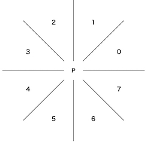

Manhattan Minimum Spanning Tree
問題
解法
- NOTE: ここで述べる解法は基本的に以下の topcoder の記事を参考に分割統治部分を座標圧縮+セグメント木で置き換えたものである．
ナイーブに考えると，全点対でマンハッタン距離を計算して Kruskal 法などの最小全域木を求めるアルゴリズムを適用すればよいと思えるが，この解法では入力の頂点数 $N$ に対して，枝数が $O(N^2)$ になってしまう．
実は全点対を考える必要はなくて，マンハッタン距離で最小になる点の間で枝を貼るだけでよい（要証明）．この方法によって枝数が $O(N)$ になり，解法の計算量を $O(N \log N)$ にすることができる．
ではここからは，ある点 P に対してマンハッタン距離が最短になる点を求める方法を説明する．ある点 P とマンハッタン距離が最短になる点を以下の図のような 8 方向の領域のそれぞれで探索し，その 8 領域で最小になった点のみと枝を貼る12．

ここでは上記の図の領域 0 を考えてみる．領域 0 において，点 P $(x_p, y_p)$ からのマンハッタン距離が最小になる点は，以下の条件で与えられる．
min x+y
s.t. y-x <= y_p-x_p
y >= y_p
ここで，$y \ge y_p$ という条件を除いて考えてみると，各点に対する領域 0 におけるマンハッタン距離が最小の点は，以下のような平面走査で求めることができる．
- イベント点: 与えられた $N$ 個の点
- 走査線: 直線 $y-x=k$ に対して，$k$ を $-\infty$ から $+\infty$ へ動かす
- つまり，与えられた点を $y-x$ の値でソートして，その順に点を処理する
- イベント点の処理
- 点 P $(x_p, y_p)$ に対する処理: まず，過去に処理したイベント点の中で $x+y$ が最小の点 P' がマンハッタン距離が最小の点である．その後，$x_p+y_p$ が過去に処理したイベント点の中で $x+y$ が最小の点ならば，それを覚えておく．
この計算量はイベント点の数が $O(N)$，各点でのイベント点の処理が $O(1)$，事前のソートが $O (N \log N)$ なので，全体では $O (N \log N)$ となる．
では $y \ge y_p$ を加えて考えてみる．これは，上記の平面走査のイベント点の処理において，今まで処理した点の中で $y$ 座標が $y_p$ よりも大きい点の中で $x+y$ の最小値を取ればよい．これを実現するには，各点を $y$ 座標でソートした列に対して $x+y$ の最小値を返すようなセグメント木を作っておけばよい．結局イベント点の処理は以下のようになる．
- イベント点の処理
- 初期化: イベント点を $y$ 座標でソートした列に対して，$x+y$ の値を列の値として持ち，最小値を返すようなセグメント木を構築する．ただし初期値は $+\infty$．
- 点 P $(x_p, y_p)$ に対する処理: まず，上記で構築したセグメント木に対して，点 P の $y$ 座標 $y_p$ に対応するセグメント木の位置から右端までの区間で $x+y$ の最小値を取得する．もしその最小値が $+\infty$ でなければ，最小値に対応する点が領域 0 における点 P からマンハッタン距離が最小の点である．その後，$x_p+y_p$ をセグメント木の対応する位置で更新する．
初期化は $O(N \log N)$，各点でのイベント点の処理が $O(log N)$ なので，結局全体では $O (N \log N)$ のままである．
他の領域も同じように考えれば，似たようなことを 8 回行うだけなので，最小全域木のもととなるグラフを構築するための計算量も $O(N \log N)$ となる．
ここからは実装上の補足である．それぞれの領域でわざわざ同じことを考えて別々の処理を書く必要があるかというと，実はそうではない．以下のように線対称に点を移動させることで，上記の平面走査の処理を一度実装するだけでよくなる．
points := 与えられた点集合
for i in 0..1 {
for j in 0..1 {
for k in 0..1 {
# 平面走査の処理
sweep()
# y=x で線対称に点を移動させる
for p in points { swap(p.x, p.y) }
}
# x=0 で線対称に点を移動させる
for p in points { p.x = -p.x }
}
# y=0 で線対称に点を移動させる
for p in points { p.y = -p.y }
}
上記の点の変換処理の正当性は，各領域での走査線・イベント点の処理が何で，各領域が上記の $i,j,k$ のいつのときに処理されているかを考えればよい．まず，各領域での走査線とイベント点での処理を列挙してみると以下のようになる．
| 領域 | 走査線 | $k$ の動かし方 | イベント点 (x', y') での最近傍点 |
|---|---|---|---|
| 0 | $y-x=k$ | $-\infty \rightarrow +\infty$ | $\min x+y$ s.t. $y \ge y'$ |
| 1 | $y-x=k$ | $+\infty \rightarrow -\infty$ | $\min x+y$ s.t. $x \ge x'$ |
| 2 | $x+y=k$ | $+\infty \rightarrow -\infty$ | $\min y-x$ s.t. $x \le x'$ |
| 3 | $x+y=k$ | $-\infty \rightarrow +\infty$ | $\min y-x$ s.t. $y \ge y'$ |
| 4 | $y-x=k$ | $+\infty \rightarrow -\infty$ | $\max x+y$ s.t. $y \le y'$ |
| 5 | $y-x=k$ | $-\infty \rightarrow +\infty$ | $\max x+y$ s.t. $x \le x'$ |
| 6 | $x+y=k$ | $-\infty \rightarrow +\infty$ | $\max y-x$ s.t. $x \ge x'$ |
| 7 | $x+y=k$ | $+\infty \rightarrow -\infty$ | $\max y-x$ s.t. $y \le y'$ |
例えば領域 4 は $i=1,j=0,k=1$ で処理されるが，このときは $(x,y)$ が $(-x,-y)$ に移動しているので，領域 0 の「走査線: $y-x=k$，$k$ の動かし方: $-\infty \rightarrow +\infty$，イベント点での最近傍点: $\min x+y$ s.t. $y \ge y'$」という操作において，$(x,y)$ を $(-x,-y)$ に置き換えると，「走査線: $-y+x=k$，$k$ の動かし方: $-\infty \rightarrow +\infty$，イベント点での最近傍点: $\min -x-y$ s.t. $-y \ge -y'$」となり，これは「走査線: $y-x=k'$，$k':=k$ の動かし方: $+\infty \rightarrow -\infty$，イベント点での最近傍点: $\max x+y$ s.t. $y \le y'$」と言い換えることができ，これは領域 4 の条件と一致する．
つまり，上記の擬似コードのように，for 文の終わりで点の変換処理を噛ませば，一度平面走査の処理を書くだけで使い回すことができる．
コード
更新履歴
- 2020/08/27: 句読点の変更，インデントの変更，記述の修正
-
8 個のそれぞれの領域においてマンハッタン距離が最短となる点と枝を構築したとしても計算量は定数倍なので，実装上は 8 つの領域の最小値をとってもとらなくても，計算量のオーダーは変わらない． ↩
-
8 領域に分ける理由についての自分の解釈をメモとして残しておく．まず，ある点 P からのマンハッタン距離が等しい点の等高線を考えると，4 方向の領域で直線の式が変わるので，4 方向に分けて考えてみよう，となる．ただその場合，各領域ごとに 2 つの条件を考慮する必要がある．点 P の座標 $(x_p, y_p)$ の右上の領域（図の 0 と 1 の領域）に対して，距離が最短となる点 $(x, y)$ は $x_p \le x$ かつ $y_p \ge y$ という 2 つの条件を満たさなければならない．しかし 8 方向に分けてみると，領域ごとに平面走査を行うことで，1 つの条件だけを考えればよいという状況になる．これが 8 つの領域に分ける理由である．ただこれは平面走査という解法ありきの理由であり，発想の飛躍が大きい．実際，平面走査がなければ，8 方向に限定することで結局もう 1 個直線の条件が増えている．より自然な理由を考えられた人がいれば教えてほしい． ↩